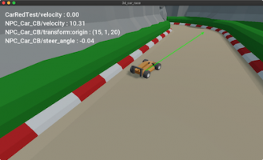
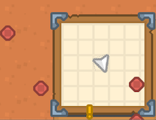
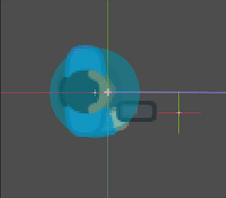
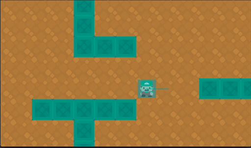
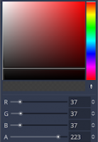
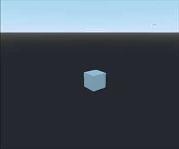
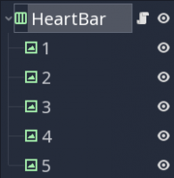

Also on KidsCanCode

Drawing Vectors in 3D :: Godot Recipes
Gamedev lessons for Godot Engine.

radar :: Godot Recipes by KidsCanCode
Gamedev lessons for Godot Engine.

Shooting projectiles :: Godot Recipes
Gamedev lessons for Godot Engine.

Grid-based movement :: Godot Recipes by …
Gamedev lessons for Godot Engine.
Touchscreen Camera :: Godot Recipes by …
Gamedev lessons for Godot Engine.

Cooldown Button :: Godot Recipes by …
Gamedev lessons for Godot Engine.

Camera Gimbal :: Godot Recipes by …
Gamedev lessons for Godot Engine.

Heart Containers: 3 Ways :: Godot Recipes
Gamedev lessons for Godot Engine.
What do you think?
14 Responses

Upvote

Funny

Love

Surprised

Sad
Be the first to comment.